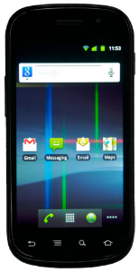

Mobile Section of Personal Security
Security for mobile devices have become quite the topic recently. A phone is a small computer and so just like personal computers they need security as well. Phones can be more difficult to protect since they are carried around everywhere and contain features that make it difficult to keep the device safe. One of the ways to keep phones safe is because they have “different network topologies” than other devices like traditional computers (Becher 1). Most computers cannot connect to cellular networks. One concern with phones is their ability to use Bluetooth. Nearly all modern devices can use bluetooth so a concern is that an attack can come through bluetooth. While attacks can come happen a way provided to stop is the ability to “disable Bluetooth” within phone settings (Becher 4). Phones also have “sound default configurations” that “only run when their services” when they are required by the software in use (Becher 12). Malicious applications are always a problem like on computers. While malicious apps are usually controlled by the respected app store on the phone, some apps can slip through the cracks like they have in the Google Play store. Apps can also be installed from computers. Apps that are installed from computers have an even greater risk to be malicious since there are no checks before publishing and the likelihood is that if it is not on the app store then it is because it is malicious. Staying safe on a phone is easy since most devices are configured by default to be safe, the only risk is downloading apps manually from the computer.